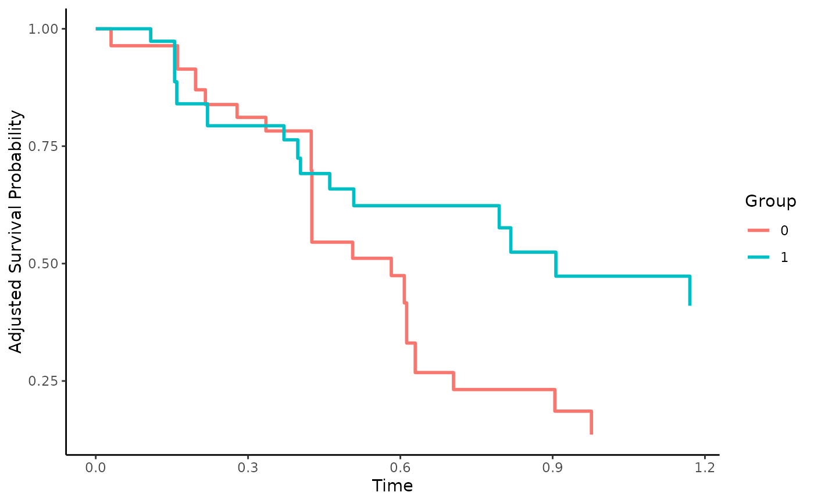

Estimate Confounder-Adjusted Survival Curves
adjustedsurv.RdThis is one of the two main functions of this R-Package. It allows the user to estimate confounder-adjusted survival curves using a variety of different methods. Some of these methods require additional packages to be installed and, depending on the specified method, there might be additional required arguments in the function call. More information is available on the documentation page of the respective surv_method.
Usage
adjustedsurv(data, variable, ev_time, event, method,
conf_int=FALSE, conf_level=0.95, times=NULL,
bootstrap=FALSE, n_boot=500,
n_cores=1, na.action=options()$na.action,
clean_data=TRUE, iso_reg=FALSE,
force_bounds=FALSE, mi_extrapolation=FALSE,
...)Arguments
- data
A
data.frameobject containing the needed time-to-event data in standard format. Ideally, this data set should only contain required variables. Can also be amidsobject created with the mice package. See details for how this works.- variable
A character string specifying the variable by which the survival curves should be grouped. Must be a valid column name of
data. The variable specified needs to be a factor variable.- ev_time
A character string specifying the variable indicating the time-to-event or time-to-censoring. Must be a valid column name of
data.- event
A character string specifying the binary event indicator. Must be a valid column name of
data.- method
A character string specifying the adjustment method to use. Case sensitive. See details.
- conf_int
A logical variable, indicating whether the asymptotic variances and confidence intervals of the survival probabilities should be estimated. Not available for all methods. More information can be found in the documentation of each method. For an alternative way to get confidence intervals, see the
bootstrapargument.- conf_level
A number specifying the confidence level of asymptotic and/or bootstrap confidence intervals.
- times
A numeric vector of time points at which the survival probability should be estimated or
NULL(default). IfNULLthe survival probability is estimated at all points in time at which an event occurred in the pooled sample.- bootstrap
A logical variable indicating whether bootstrapping should be performed or not. In bootstrapping, a number of simple random samples with replacement of size
nrow(data)are drawn fromdata. For each sample the calculations are repeated and used to estimate standard errors and confidence intervals. This can be used to obtain confidence intervals when asymptotic variance calculations are not available.- n_boot
Number of bootstrap replications to perform. Ignored if
bootstrapisFALSE.- n_cores
The number of cores to use when calculating bootstrap estimates. Ignored if
bootstrap=FALSE. Is set to 1 by default, resulting in single threaded processing. Internally uses the doParallel package ifn_cores > 1. In that case it also uses the doRNG package to make the results replicable. See?doRNGand?doParallelfor more details. Using multiple cores will speed up the calculation considerably in most cases.- na.action
How missing values should be handled. Can be one of: na.fail, na.omit, na.pass or na.exclude. Also accepts strings of the function names. See
?na.actionfor more details. By default it uses the na.action which is set in the global options by the respective user. Ignored if multiple imputation is used.- clean_data
If
TRUEall columns which are not needed for the estimation are removed fromdatabefore any further calculations are performed. This ensures that calls tona.omit(see argumentna.action) do not remove rows which are fully observed in respect to relevant columns due to missing values in irrelevant columns. Set toFALSEto skip this step. Usually this argument can be ignored. When using non-standard outcome models however it should be set toFALSE.- iso_reg
Either
TRUEorFALSE(default), controlling whether isotonic regression is performed on the resulting survival probability estimates. This can be used to ensure that the survival curves are non-increasing. Since only a few methods may have this problem, this argument is only relevant for some methods (see method specific documentation).- force_bounds
Either
TRUEorFALSE(default), controlling whether the resulting survival probability estimates should be forced to lie between 0 and 1. IfTRUEand there are values higher than 1, they are simply set to 1. Values lower than 0 are similarly set to 0. Since only a few methods may have this problem, this argument is only relevant for some methods (see method specific documentation).- mi_extrapolation
Whether to allow extrapolation due to imputed survival times or not. This argument is only relevant when using multiply imputed
datawith missing covariates invariable,ev_timeorevent. Depending on the algorithm used to obtain the imputed datasets, it may be possible that one or more imputed datasets contain survival times in a group that are larger than the maximum observed survival time in that group. This may lead to unwanted extrapolation (e.g. the survival curves extending further than they should). By keeping this argument atFALSE, these times are removed from the output. If set toTRUE, all available estimates will be used.- ...
Further arguments passed to the respective
surv_method. For example when usingmethod="direct"all further arguments are passed to thesurv_directfunction. See details.
Details
The primary purpose of the adjustedsurv function is to provide a convenient way to estimate confounder-adjusted survival curves using any of the methods provided in the literature. A plot method is provided to graphically display the estimated survival curves as well. Currently the following methods can be used:
"direct": Direct Standardization based on a previously fit model (Cox-Regression, ...).
"direct_pseudo": Direct Standardization based on Pseudo-Values.
"iptw_km": A weighted Kaplan-Meier estimator.
"iptw_cox": A weighted estimator based on a stratified weighted Cox-Regression model.
"iptw_pseudo": A weighted estimator based on Pseudo-Values.
"matching": Using Propensity Score Matching to estimate the adjusted survival curves.
"emp_lik": An Empirical Likelihood based estimator.
"aiptw": An Augmented Inverse Probability of Treatment Weighting estimator.
"aiptw_pseudo": An Augmented Inverse Probability of Treatment Weighting estimator using Pseudo-Values.
"tmle": Targeted Maximum Likelihood Estimation for continuously distributed time-to-event data.
"strat_amato": A method based on stratification and weighting by Amato (1988).
"strat_nieto": A method based on stratification and weighting by Gregory (1988) and Nieto & Coresh (1996).
"strat_cupples": A method based on stratification and weighting by Cupples et al. (1995).
"iv_2SRIF": An instrumental variable method based on two stage residual inclusion with a frailty term.
"prox_iptw": Proximal causal inference based inverse probability of treatment weighting.
"prox_aiptw": Proximal causal inference based augmented inverse probability of treatment weighting.
"km": A simple stratified Kaplan-Meier estimator without any form of adjustment.
A short description of each method is contained in the documentation of the respective surv_method function. A concise overview of the supported functionality of each method can be found in the associated vignette (vignette(topic="method_overview", package="adjustedCurves")). For more detailed descriptions the cited literature in the respective documentation pages can be used. The documentation for method="direct" for example can be accessed using ?surv_direct.
Required & Optional Arguments
Every method requires the specification of the data, variable, ev_time, event and method arguments. All other arguments mentioned on this page are optional and work for all methods. Depending on the method used, other arguments are required as well. Those can be found on the top of the help page of the respective method. The help pages also list additional optional arguments.
Confidence Intervals
For most methods approximations for the asymptotic variance of point estimates of the survival function have been proposed in the literature. Where available, those can be estimated and added to the output object using conf_int=TRUE. It is however recommended to use bootstrapping to estimate the variance instead, which can be done by setting bootstrap=TRUE. The n_boot argument is set to 500 by default. This number was chosen because it worked well in simulations but it does not guarantee convergence in practice. Users are recommended to inspect the bootstrapped estimates and adjust the number of replications accordingly. To allow faster bootstrapping the user can choose to run the function on multiple CPU cores in parallel using the n_cores argument.
Missing Data
There are two ways to deal with missing data using this function. The first is using the na.action argument. It simply calls the respective na.action function on the data before doing any further processing. By using na.action="na.omit" for example, only rows with complete data are kept for the analysis.
Alternatively, this function also supports the use of multiple imputation via the mice package. Instead of supplying a single data.frame, the user should create a mids object using the mice function and directly pass this to the data argument. When methods are used which rely on previously estimated treatment assignment or outcome models such as "direct" or "aiptw", the user is required to supply a mira object instead of a single model. In other words: the models have to be fit on every imputed dataset before supplying them to this function. See ?mice and the associated documentation for more information on how to use multiple imputation. When using bootstrap=TRUE and multiple imputation, the bootstrapping is performed on every imputed dataset separately. Survival probabilities are simply averaged across the imputed datasets according to Rubins Rule. Confidence intervals are calculated by first averaging the standard errors over all imputed datasets and afterwards using this pooled value to obtain a new confidence interval with the normal approximation.
Competing Risks
If the data contains competing-risks, this function cannot be used. It is however possible to estimate confounder-adjusted cause-specific cumulative incidence functions using the adjustedcif function.
Graphical Displays
A general plot of the estimated adjusted survival curves can be obtained using the associated plot method. In addition, a plot of the difference between two estimated adjusted survival curves can be produced using the plot_curve_diff function.
Value
Returns an adjustedsurv object containing the following objects:
- adjsurv
A
data.frameof estimated adjusted survival probabilities for some points in time for each level ofvariable. Depending on the arguments used also includes standard errors and confidence intervals.- data
The
data.frameused in the original function call.- method
The method used to adjust the survival curves.
- categorical
Whether there are more than 2 groups in
variable.- call
The original function call.
When the argument bootstrap is set to TRUE, it additionally contains the following objects:
- boot_data
The adjusted survival curves estimated in each bootstrap sample.
- boot_adjsurv
The mean adjusted survival curves of all bootstrap samples and corresponding standard errors and percentile confidence intervals.
When multiple imputation was used, the function additionally contains a mids_analyses object, containing the adjustedsurv objects for each imputed dataset.
Some method specific objects might also be contained in the output.
References
Robin Denz, Renate Klaaßen-Mielke, and Nina Timmesfeld (2023). "A Comparison of Different Methods to Adjust Survival Curves for Confounders". In: Statistics in Medicine 42.10, pp. 1461-1479
Other relevant literature can be found in the respective surv_method documentation.
Author
The function itself was written by Robin Denz, but some surv_method functions include wrappers for functions written by other people. More information can be found in the respective surv_method documentation.
Examples
library(adjustedCurves)
library(survival)
set.seed(42)
# simulate some example data
sim_dat <- sim_confounded_surv(n=50, max_t=1.2)
sim_dat$group <- as.factor(sim_dat$group)
# treatment assignment model
glm_mod <- glm(group ~ x2 + x3 + x5 + x6, data=sim_dat, family="binomial")
# outcome model
cox_mod <- coxph(Surv(time, event) ~ x1 + x2 + x4 + x5 + group,
data=sim_dat, x=TRUE)
# using direct adjustment with asymptotic confidence intervals
adjsurv <- adjustedsurv(data=sim_dat,
variable="group",
ev_time="time",
event="event",
method="direct",
outcome_model=cox_mod,
conf_int=TRUE,
bootstrap=FALSE)
# using IPTW Kaplan-Meier with asymptotic confidence intervals
adjsurv <- adjustedsurv(data=sim_dat,
variable="group",
ev_time="time",
event="event",
method="iptw_km",
treatment_model=glm_mod,
conf_int=TRUE,
bootstrap=FALSE)
# using AIPTW with asymptotic confidence intervals
adjsurv <- adjustedsurv(data=sim_dat,
variable="group",
ev_time="time",
event="event",
method="aiptw",
outcome_model=cox_mod,
treatment_model=glm_mod,
conf_int=TRUE,
bootstrap=FALSE)
# using direct adjustment at custom points in time
custom_times <- c(0.001, 0.1, 0.2, 0.6, 1.1)
adjsurv <- adjustedsurv(data=sim_dat,
variable="group",
ev_time="time",
event="event",
method="direct",
outcome_model=cox_mod,
conf_int=TRUE,
bootstrap=FALSE,
times=custom_times)
# using bootstrapping with direct adjustment
# NOTE: n_boot should be much higher than 10 in reality, only used
# here as a fast example
adjsurv <- adjustedsurv(data=sim_dat,
variable="group",
ev_time="time",
event="event",
method="direct",
outcome_model=cox_mod,
conf_int=TRUE,
bootstrap=TRUE,
n_boot=10)
# not run because those are too slow
# \donttest{
# using bootstrapping with direct adjustment, run in parallel
# on two cores
adjsurv <- adjustedsurv(data=sim_dat,
variable="group",
ev_time="time",
event="event",
method="direct",
outcome_model=cox_mod,
conf_int=TRUE,
bootstrap=TRUE,
n_boot=4,
n_cores=2)
# using multiple imputation
library(mice)
library(WeightIt)
# simulate some data as example
sim_dat <- sim_confounded_surv(n=50, max_t=1.2)
sim_dat$group <- as.factor(sim_dat$group)
# introduce random missingness in x1 as example
# NOTE: This is only done as an example, in reality you would
# already have missing data, not introduce it yourself.
sim_dat$x1 <- ifelse(runif(n=50) < 0.5, sim_dat$x1, NA)
# perform multiple imputation
mids <- mice::mice(data=sim_dat, method="pmm", m=2, printFlag=FALSE)
# IPTW KM using WeightIt on imputed data
adj <- adjustedsurv(data=mids,
variable="group",
ev_time="time",
event="event",
method="iptw_km",
treatment_model=group ~ x1 + x2 + x5 + x6,
weight_method="ps")
plot(adj)

# More specific examples can be found in the documentation of each
# respective surv_method. See ?surv_ + "method" for more information.
# }